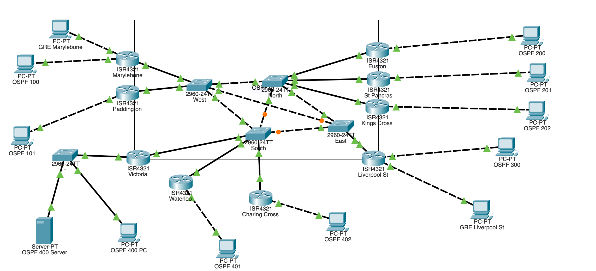
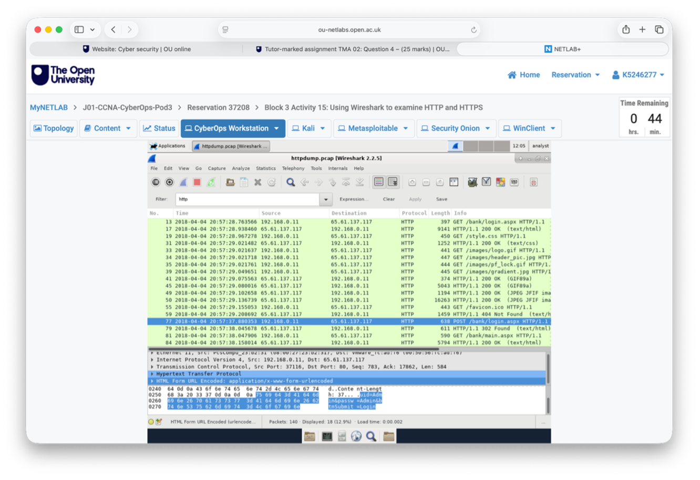
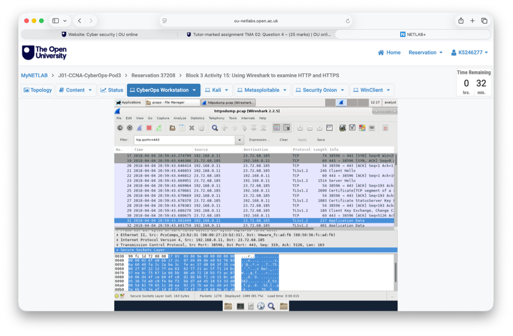

A collection of practical projects developed through my university studies and independent learning.

Configured and troubleshot a simulated network using Cisco Packet Tracer, featuring multiple Cisco routers, switches and interconnected network segments. Worked with OSPF routing and network connectivity, developing practical skills in router configuration, network diagnostics and troubleshooting.
Technologies: Cisco Packet Tracer | Cisco IOS | OSPF | TCP/IP
Analysed captured network traffic using Wireshark to investigate differences between HTTP and HTTPS. Examined HTTP requests and form data, applied protocol filters and inspected TLS packets to understand how encryption protects information transmitted across networks.


Wireshark | Network SecurityTechnologies: Wireshark | TCP/IP | HTTP | HTTPS | TLS
Building responsive web interfaces using HTML, CSS, JavaScript and Bootstrap.
HTML | CSS | JavaScript